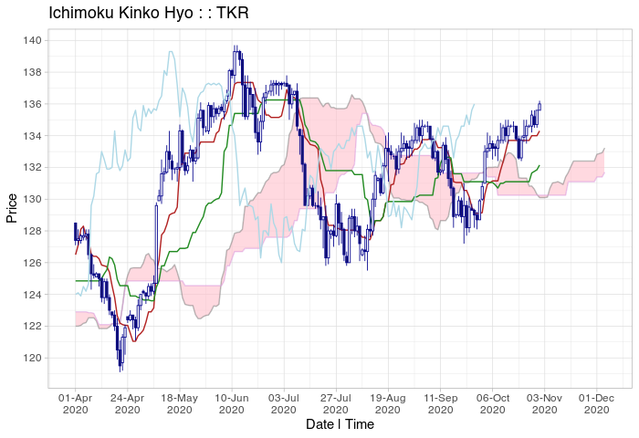

Visualization and Tools for Ichimoku Kinko Hyo Strategies
An implementation of ‘Ichimoku Kinko Hyo’, also commonly known as ‘cloud charts’. Static and interactive visualizations with tools for creating, backtesting and development of quantitative ‘ichimoku’ strategies. As described in Sasaki (1996, ISBN:4925152009), the technique is a refinement on candlestick charting originating from Japan, now in widespread use in technical analysis worldwide. Translating as ‘one-glance equilibrium chart’, it allows the price action and market structure of financial securities to be determined ‘at-a-glance’. Incorporates an interface with the OANDA fxTrade API https://developer.oanda.com/ for retrieving historical and live streaming price data for major currencies, metals, commodities, government bonds and stock indices.
Installation
Install the released version of ichimoku from CRAN:
install.packages("ichimoku")Or the latest development version from rOpenSci R-universe binaries:
install.packages("ichimoku", repos = "https://shikokuchuo.r-universe.dev")Or the latest development version from the Github source:
devtools::install_github("shikokuchuo/ichimoku")Note: ichimoku object specification released 2021-08-08 - please install build 0.3.51 or above to ensure compatibility.
Example
Load package and sample price data:
Simply ichimoku() and plot():
cloud <- ichimoku(TKR)
plot(cloud, window = "2020-04/")
autostrat() to automatically evaluate and rank top-performing strategies:
autostrat(cloud, n = 3)
#> [,1] [,2] [,3]
#> Strategy "senkouB > tenkan" "cloudB > tenkan" "senkouB > kijun"
#> --------------------- "----------" "----------" "----------"
#> Strategy cuml return % 17.49 16.08 14.1
#> Per period mean ret % 0.0906 0.0838 0.0741
#> Periods in market 63 51 64
#> Total trades 3 3 3
#> Average trade length 21 17 21.33
#> Trade success % 100 100 100
#> Worst trade ret % 3.64 3.16 3.49
#> --------------------- "----------" "----------" "----------"
#> Benchmark cuml ret % 5.53 5.53 5.53
#> Per period mean ret % 0.0302 0.0302 0.0302
#> Periods in market 178 178 178
#> --------------------- "----------" "----------" "----------"
#> Direction "long" "long" "long"
#> Start 2020-04-01 2020-04-01 2020-04-01
#> End 2020-10-29 2020-10-29 2020-10-29
#> Ticker "TKR" "TKR" "TKR"Principal ichimoku functions
Data
ichimoku()- to create an ichimoku object from price data.archive()- for reading and writing ichimoku objects to/from Apache Arrow archives.oanda()- to retrieve price data from the OANDA fxTrade API.oanda_stream()- to stream a live data feed from the OANDA fxTrade API.
Visualization
plot()- to plot a cloud chart from an ichimoku object.iplot()- to plot an interactive cloud chart from an ichimoku object.oanda_chart()- to create live updating ichimoku cloud charts using OANDA data.oanda_studio()- a complete live analysis environment using OANDA data implemented in R Shiny.
Strategies & ML
strat()- to augment an ichimoku object with a strategy, including complex combined and asymmetric strategies.stratcombine()- to create custom combined strategies.autostrat()- to automatically evaluate and rank top-performing strategies.mlgrid()- to generate a numeric representation of the relationship between ichimoku cloud chart elements.
References
Sasaki, H. 佐々木 英信 (1996), 一目均衡表の研究 [ichimoku kinkouhyou no kenkyuu]. Tokyo, Japan: Toushi Radar.
‘OANDA’ and ‘fxTrade’ are trademarks owned by OANDA Corporation, an entity unaffiliated with the ichimoku package.
Gao, C. (2021), ichimoku: Visualization and Tools for Ichimoku Kinko Hyo Strategies. R package version 0.3.51. https://shikokuchuo.net/ichimoku/ CRAN page: https://CRAN.R-project.org/package=ichimoku
Listed CRAN Finance Task View: https://CRAN.R-project.org/view=Finance